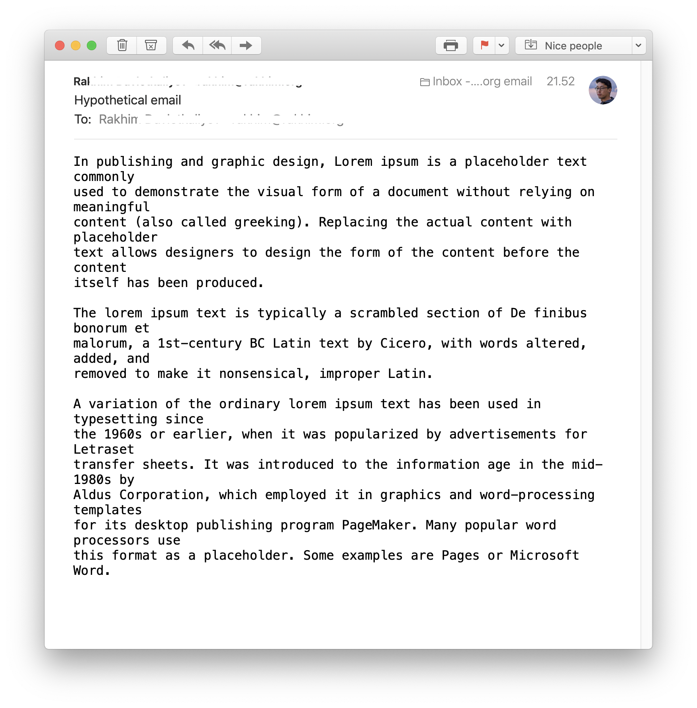

80 characters limit is wrong
I believe the 80-characters (or any other number) line limit for text to be wrong. Not archaic or irrelevant, but wrong. It violates a fundamental idea of computer science: separating layers of abstraction.
Not talking about code today, although, I don't think a strict limit is a good thing there either, for other reasons. I'm talking about human text.
Many programmers stick to the 80-characters line length limit while writing documentation, emails, etc. Emacs and other editors even have special modes or plugins for automatic hard wrapping.
Often, results look like so:

Without hard-wrapping, this email had a chance to look normal everywhere. Any app can interpret and present it in any way. With hard-wrapping though, this email can only look normal in certain conditions. Namely, a certain lower limit for window width.
Imagine joining a web project and seeing a users database table with values like <strong>Jason Norwig</strong>. Your reaction might include profanity, because mixing data and presentation is wrong. Person's name (data) and its presentation (HTML) are different layers of abstraction.
Hard-wrapping lines by inserting \n symbols where they don't have any semantic meaning is the same sin. The whole character return thing was relevant in a context where data was inseparable from presentation: typewriters and paper.
A key argument for hard-wrapping goes something like this: "modern screens are too wide, it's uncomfortable to read long lines". But modern screens come with modern apps, which can handle presentation to your preference. By modern I mean "developed after the '70s". Text editors (including vim and Emacs) have been able to soft-wrap lines at arbitrary comfortable column for decades.
If your text presentation tool can't present text to your preference, consider replacing it. Moving this responsibility into data itself is not a solution.
So can we please
stop doing this
to each other.
23.05.2019